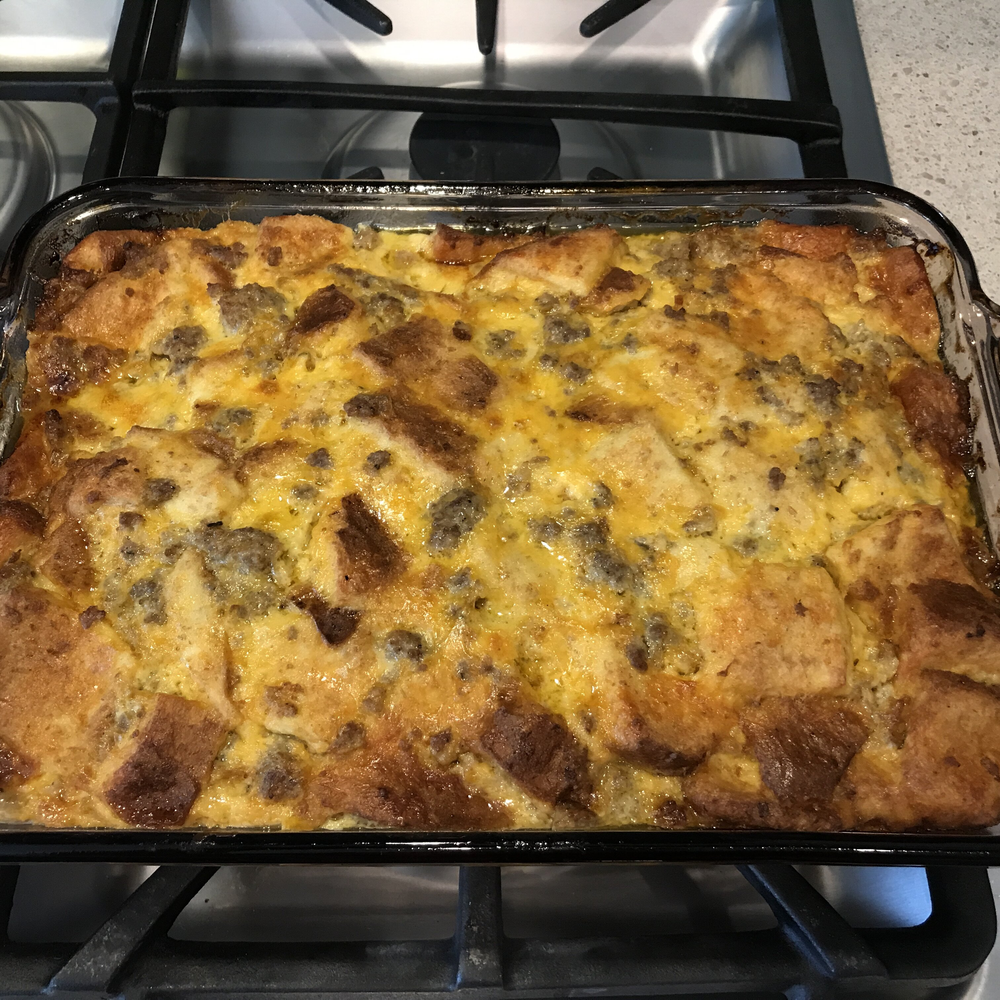

Christmas Breakfast Sausage Casserole

Description
My mom has always made this for us on Christmas morning, and since we only have it once a year it makes it even more good. It is so delicious, and everyone enjoys it! When I double the recipe I use 1 pound regular sausage and 1 pound sage sausage.
Ingredients
- 1 pound ground pork sausage
- 1 teaspoon mustard powder
- 1/2 teaspoon salt
- 4 eggs, beaten
- 2 cups milk
- 6 slices of bread, toasted and cut into cubes
- 8 oz Sharp Cheddar cheese, shredded
Instructions
- Crumble sausage into a medium skillet. Cook over medium heat until evenly brown; drain.
- In a medium bowl, mix together mustard powder, salt, eggs and milk. Add the sausage, bread cubes, and cheese, and stir to coat evenly. Pour into a greased 9x13 inch baking dish. Cover, and chill in the refrigerator for 8 hours, or overnight.
- Preheat oven to 350 defrees F (175 degrees C)
- Cover, and bake 45 to 60 minutes. Uncover, and reduce temperature to 325 degrees F (165 degrees C). Bake for an additional 30 minutes, or until set.